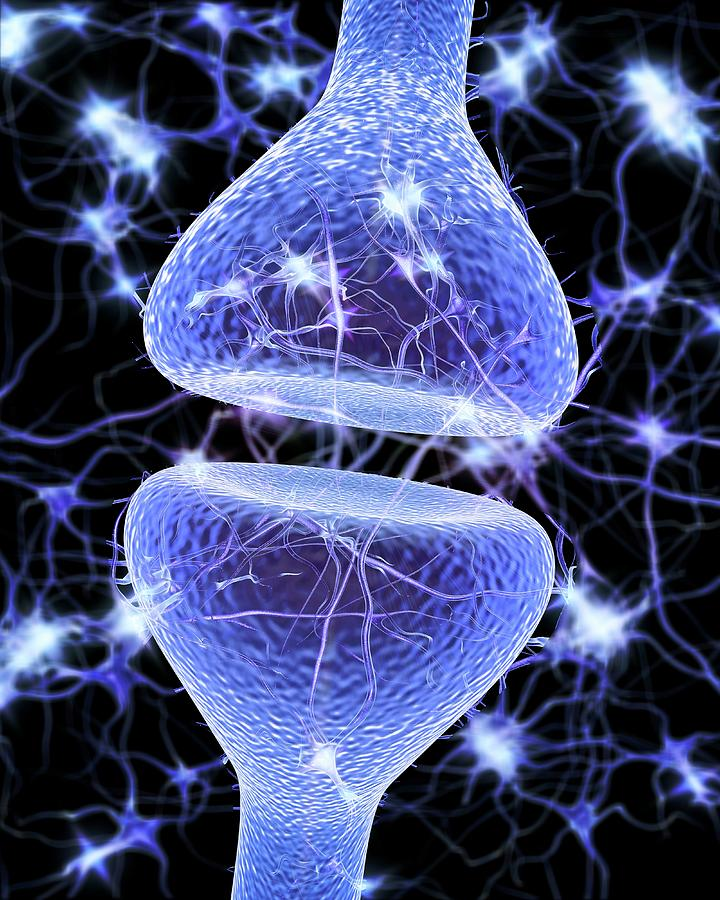
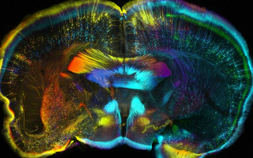

Artificial Intelligence
- Algebra, Algorithms, Calculus and Statistics
- Bayesian Networking and Neural nets
- Physics
- Computer Science and Programming Languages
Neuropsychopharmacology
Neuroscience
Hi! My name is Engred. I am a student at Brooklyn College, and I am currently taking CISC 1600. Now, a little more about me - I enjoy horror movies, cooking, baking, making soap, listening to music, spending time with my family & dog, and I am an all-time animal lover. I most definitely feel at best in nature, there's just something about the great outdoors that I LOVE! Favorite foods include seafood, sushi, pasta, and acai bowls. I must confess that I do get bored easily and so I’m constantly finding things to do. Well, that's about it folks. Thank you for taking the time of getting to know me a little more. 👋
| Career Name | Description | Requirements |
|---|---|---|
|
Artificial Intelligence |
Artificial intelligence (AI) covers a broad area of computer science that mostly emphasizes a machines ability to carry out tasks that humans can do, even much more complex at times. Such tasks as observing, learning, planning and making decisions for problem-solving can be carried out through AI use. There are two main branches to AI and those are machine learning and deep learning. Although they are often used interchangeably, there are differences, but they do tend to work hand in hand. Machine Learning combines large amounts of data + fast, iterative processing and intelligent algorithms. Deep Learning, on the other hand, is composed of multiple layers that form neural networks that consist of perceptron’s (neurons of machines). In other words, deep Learning mimics the human brain, or so to be more specific, it’s neurons. An example that uses both machine learning and deep learning are self-driving cars. | Atleast a bachelor's degree but for higher positions, a master's or PhD are needed.
|
|

Neuropsychopharmacology |
Neuropsychopharmacology is a field of science that studies how drugs affect the brain. This science branch combines both neuroscience and psychopharmacology, which allows for the further study of how drugs also affect behavior. | It depends honestly. You have to have a bachelor's for sure in either biology, neuroscience, or psychology. Then you will need to go for a masters in any of the fields listed above and then a PhD in either of the fields listed above or pharmacology. |
|

Neuroscience |
Neuroscience studies the nervous system’s development, structure and function. In this field, neuroscientists focus on how the brain impacts both behavior and cognition. But also study what happens to the nervous system during traumatic events, and disorders such as neurological and psychiatric. | It depends what branch you want to get in. For a neuroscientist, you need a PhD and for clinical work you must go to med school. For your bachelor's you can get a neuroscience degree or a biology degree. For the PhD you can choose anything from advanced degrees such as neurobiology or pharmacology. |